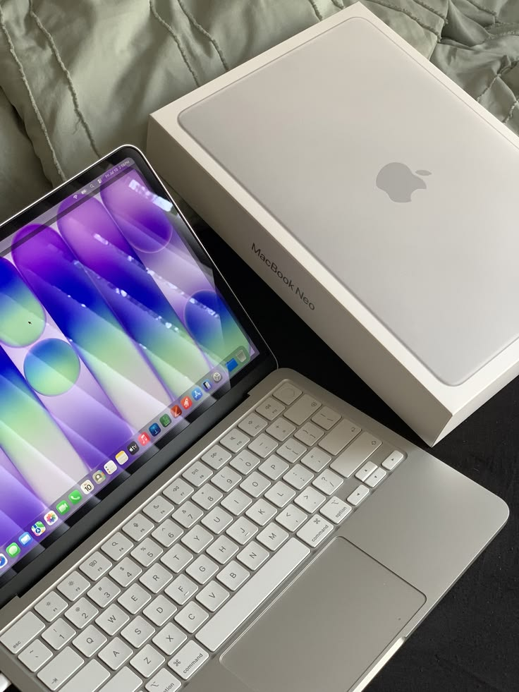
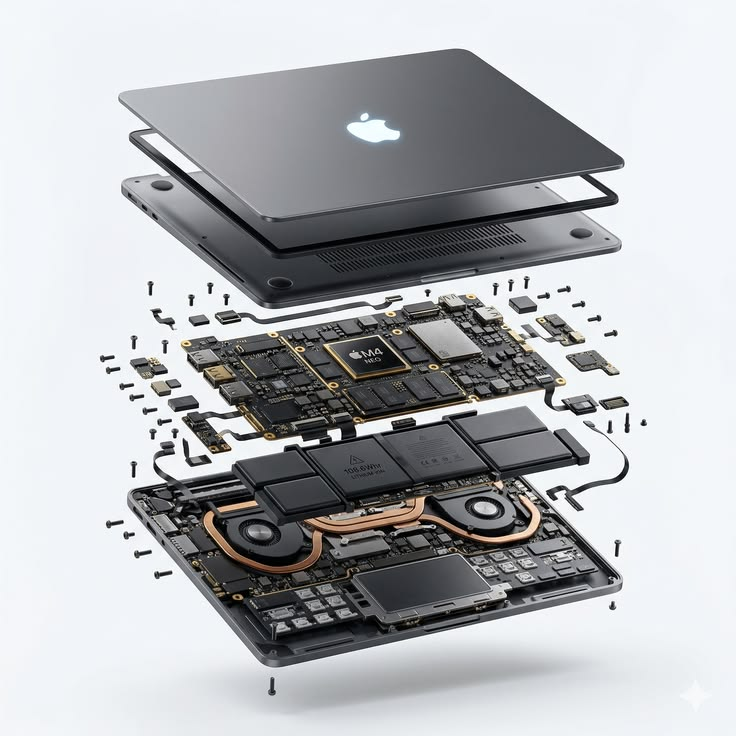
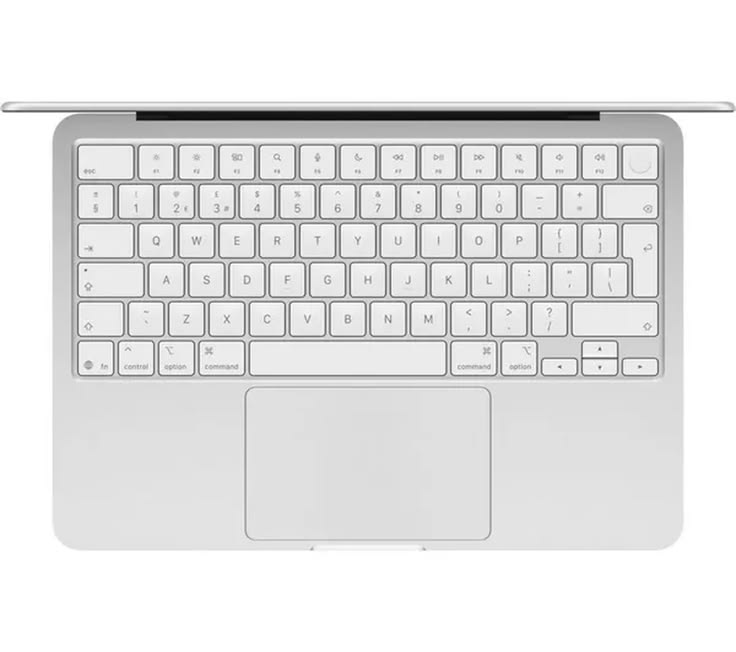

CPU · GPU · Neural Engine
SoC menjadi pusat pemrosesan yang menangani instruksi aplikasi, grafis, dan beban kerja machine learning.

01 — COMPUTER ARCHITECTURE PROJECT
APPLE / MACBOOK NEO
Eksplorasi visual mengenai komponen utama yang membentuk sebuah MacBook Neo—mulai dari sistem pemrosesan, memori, penyimpanan, logic board, hingga sistem termal dan input.
EXPLORE ↓02 — SYSTEM OVERVIEW
SoC menjadi pusat pemrosesan yang menangani instruksi aplikasi, grafis, dan beban kerja machine learning.
Layar menjadi perangkat output visual utama yang menerjemahkan data grafis menjadi piksel yang terlihat.
Pengendali daya mengatur distribusi listrik, pengisian, konsumsi komponen, dan perlindungan termal.
Antarmuka I/O menghubungkan MacBook dengan perangkat eksternal dan jaringan.
03 — EXPLODED ARCHITECTURE
Gambar exploded view menjadi pusat visual untuk melihat bagaimana lapisan hardware membentuk satu perangkat.

04 — THE CORE
PROCESSING
CPU, GPU, Neural Engine, dan pengendali sistem terintegrasi sebagai pusat komputasi.
MEMORY
Ruang kerja aktif yang digunakan sistem operasi dan aplikasi secara terintegrasi.
STORAGE
Penyimpanan non-volatil untuk sistem operasi, aplikasi, dokumen, foto, dan data.
MAIN BOARD
Jaringan utama yang menghubungkan chip, sensor, konektor, jalur sinyal, dan daya.
POWER
Menyediakan energi portabel sekaligus dipantau oleh sistem manajemen daya.
THERMAL
Memindahkan panas dari komponen berperforma tinggi agar temperatur tetap terkontrol.
05 — COMPONENT DEEP DIVE
Komponen tidak bekerja sendiri. Setiap bagian berkontribusi pada satu alur input, proses, penyimpanan, dan output.
CPU menjalankan instruksi. GPU menangani grafis. Neural Engine dirancang untuk beban kerja machine learning.
RAM menjadi ruang kerja aktif dan memungkinkan unit pemrosesan berbagi sumber daya memori secara terintegrasi.
SSD menyimpan sistem dan data secara non-volatil tanpa bagian mekanis yang berputar.
Logic board menghubungkan chip, pengendali, sensor, konektor, jalur sinyal, dan rangkaian daya.
Baterai memasok energi DC sementara manajemen daya mengatur tegangan, arus, pengisian, dan proteksi.
Heatsink, heat spreader, heat pipe, atau kipas—tergantung desain—membantu mempertahankan temperatur operasional.
Panel, pengendali display, backlight, sensor, dan jalur data mengubah hasil pemrosesan menjadi gambar.
Keyboard, trackpad, kamera, mikrofon, dan speaker menjadi jembatan antara pengguna dan sistem.

06 — HUMAN INTERFACE
Keyboard, trackpad, kamera, mikrofon, speaker, dan sensor menjadi jembatan antara pengguna dan sistem komputasi.
07 — STEVE JOBS
Steve Jobs adalah salah satu pendiri Apple dan tokoh penting dalam membentuk arah produk, desain, pemasaran, serta budaya perusahaan.
APPLE / 1976 → LEGACY
Jobs mendirikan Apple pada 1976 bersama Steve Wozniak dan Ronald Wayne. Perannya sangat kuat pada sisi visi produk dan pengalaman pengguna.
Perjalanannya mencakup Apple I dan Apple II, Macintosh, NeXT, Pixar, hingga kembali memimpin Apple dan membantu mengarahkan era iMac, iPod, iPhone, dan iPad.
Jobs, Wozniak, dan Wayne mendirikan Apple Computer.
Apple II membantu membawa komputer pribadi ke pasar yang lebih luas.
Macintosh memperkuat fokus Apple pada antarmuka grafis dan pengalaman pengguna.
Jobs meninggalkan Apple, mendirikan NeXT, dan menjadi figur penting di Pixar.
Jobs kembali ketika Apple mengakuisisi NeXT dan memimpin transformasi perusahaan.
Apple memperluas pengaruhnya dari komputer ke musik, telepon pintar, dan tablet.
08 — APPLE DESIGN PHILOSOPHY
09 — HOW IT WORKS TOGETHER
10 — COMPONENT SUMMARY
*Spesifikasi mengikuti materi visual yang diberikan untuk tugas dan dapat disesuaikan dengan unit sebenarnya.
CONCLUSION
MacBook Neo dapat dipahami sebagai sistem terintegrasi: setiap komponen memiliki peran spesifik, tetapi performa akhir ditentukan oleh bagaimana seluruh komponen saling berkomunikasi.